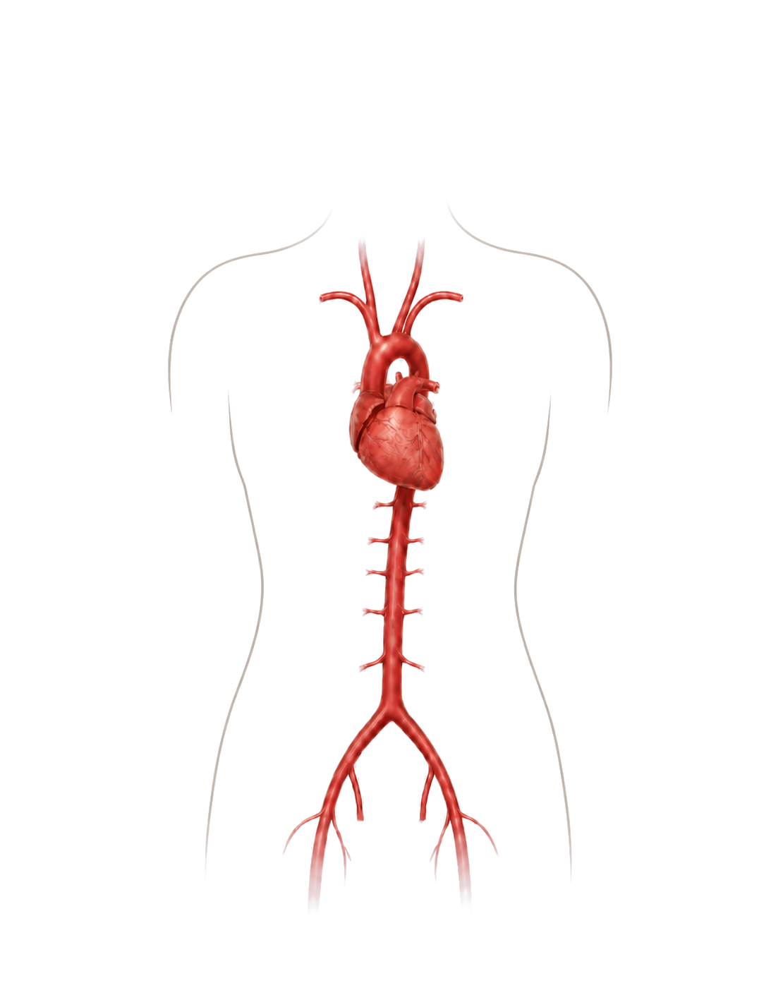

Alex
Aortic Aneurysm
A CT scan reveals that his aorta has widened. His story follows the question of when observation becomes treatment.
Start Alex's storyTwo conditions, two journeys, one vital blood vessel.

Patient-centered narratives connect imaging, data, and medical decision-making.
Aortic Aneurysm
A CT scan reveals that his aorta has widened. His story follows the question of when observation becomes treatment.
Start Alex's storyAortic Dissection
An acute tear changes the path of blood through her aorta. Her story follows the vessel wall from the event into the chronic phase.
Start Miriam's story